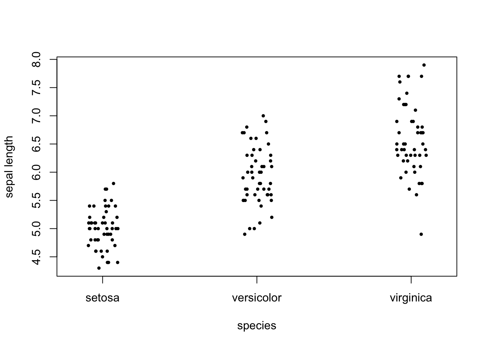
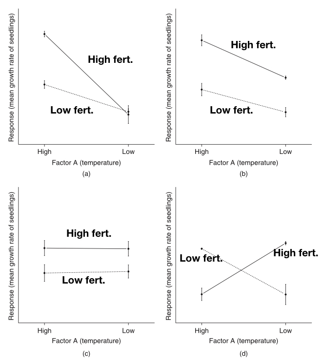

10 Introduction to Analysis of Variance
10.1 Background
In the last chapter we covered analysis situations in which we want to understand the relationship between two continuous variables. We also learned that in some of those situations there is a clear response (y) and a clear predictor (x) variable, making possible the application of linear regression analysis. In this chapter we will continue to work within the space of response and predictor variables, but now we consider one or more predictors that are categorical (not quantitative) in nature. This type of study design is especially common when we apply treatments that fall into classes (e.g. “mutant” vs “wild-type” in genetics) or observe explanatory factors in nature that are qualitative (e.g. some climatic and geological conditions). One approach to this type of problem is called “Analysis of Variance” (ANOVA or AOV), and it, like other frequentist methods we have discussed, was formalized in the early 1900s. The general idea behind ANOVA is that we can test hypotheses about differences in group means for a response variable by comparing average within-group variance to among-group variance. In this case the “groups” are different factor levels of our explanatory variable(s). When within-group variances are substantially smaller than the among-group variance it stands to reason, given a few assumptions, that the distributions (and therefore the means) of at least some of the “groups” are different. Interestingly, this exercise of variance partitioning is tractable in a regression framework, because we can calculate sums of squares to reflect different variance components, and we can conceptualize the degree of difference between group means much in the same way we think about a slope in a regression model. For this reason, approaches such as regression, ANOVA, and others are all categorized as general linear models.
10.2 General linear models
As mentioned, we can express the effects of categorical predictor variables on a numeric response in models that are very similar to regression models. Recall that for regression, we used the following straight-line model: \[y_i=\beta_0+\beta_1x_i+\varepsilon_i\]
Where \(y\) is the response variable, \(x\) is the predictor variable, \(\beta_0\) is the y-intercept, \(\beta_1\) is the slope, and \(\varepsilon\) is the unexplained variation, or error.
In the case of a single categorical predictor, for example, we can similarly include effects of each factor level relative to the overall mean of the response variable, as follows: \[y_{ij}=\mu+\beta_1(level_1)_{ij}+\beta_2(level_2)_{ij}+...+\varepsilon_{ij}\] Where each group (factor level) \(i\) contains a number of observations \(j\), \(\mu\) is the overall mean of \(y\), \(\beta\)s represent the effects of the corresponding factor levels relative to the overall mean, and \(\varepsilon_{ij}\) is the error term. You can think of \(\mu\) as being analogous to the y-intercept, and the \(\beta\)s as adding or subtracting effect sizes to or from the grand mean. Because factor levels don’t actually take on numeric values, in practice they are encoded using what are called binary “dummy” variables. If a particular observation is in group \(i\), it is represented as a “1”, and otherwise as a “0”. So, although your data frame (in R) may include a factor with three factor levels (for example “A”, “B”, and “C”), under the hood R functions use three dummy variables to encode that factor and perform the appropriate calculations. A shorthand linear model notation, which collapses all level effects for a given factor into one term (denoted by \(\alpha\)) is often used: \[y_{ij}=\mu+\alpha_i+\varepsilon_{ij}\] Where \(\alpha_i\) represents the effect of belonging to group \(i\), expressed as the difference between each group \(i\) mean (\(\mu_i\)) and the overall mean (\(\mu\)). This notation is more convenient, especially when more than one factor is included in the model, a situation we will address later in the chapter.
10.3 Single-factor ANOVA
Single-factor Analysis of Variance describes the case in which we have a single quantitative response variable and a single categorical predictor variable. As discussed, the predictor variable (which we call a factor) consists of two or more factor levels that make up the possible conditions, or categories, of that variable. The procedure for ANOVA involves calculating sum of squares (SS) describing variation between/among factor levels (groups), and the SS descrbing variation within each group. We divide each of these SS values by the appropriate degrees of freedom (resulting in values we refer to as “mean squares” or MS). Finally we divide the group-level MS (\(MS_{groups}\)) by the within-group MS (called \(MS_{residual}\) because it represents the residual variation not explained by the factor). This value is an F-ratio, which should sound familiar from the regression section of last chapter. Recall that an F-ratio (in this case \(F=\frac{MS_{groups}}{MS_{residual}}\)) quantifies how much variation in the response variable is explained by a model, relative to how much variation is not explained by it. Large F-ratios in the case of ANOVA indicate that the explanatory variable (the factor) is explaining a significant amount of variation in y relative to the overall variation. We compare F to an F distribution with the appropriate degrees of freedom in order to calculate our p-value for a given hypothesis test.
Let’s walk through an example to help visualize what is actually going on when we perform single-factor ANOVA. Say that we are studying the percent time that male mice experiencing discomfort spend “stretching,” and that we are intereseted in how social context influences this variable. We have data from an actual experiment (Langford et al. 2006) in which mice experiencing mild discomfort (result of injection of 0.9% acetic acid into the abdomen) were randomly assigned to one of three social treatments: 1. isolation, 2. housed with a companion mouse not injected, or 3. housed with a companion mouse also injected and exhibiting “stretching” behaviors associated with discomfort. The results suggest that mice stretch the most when a companion mouse is also experiencing mild discomfort. Mice experiencing pain appear to “empathize” with co-housed mice also in pain. To verbally state a linear model for the analysis of this experiment, we might say : \(stretching=mean_{overall}+treatment\). This model statement includes a response variable, a constant, and an explanatory variable. If we plot the data, we can see the respective distributions for time spent stretching among the three different treatments.
Note that in this type of plot (sometimes referred to as a “strip chart”), the points are “jittered” with respect to the factor levels along the x-axis, to assist with seeing all of the points clearly. In R we can use either the plot() function or the stripchart() function with the method="jitter" argument to do this. By the looks of the plot, we might reasonably suspect that the “injected companion” treatment appears to shift the percent time spent stretching up, relative to the other groups. As a consequence, we would expect the among-group SS to be larger than the average within-group SS.
To calculate the appropriate F-ratio, for this data set, we would use the MS equations from column 3 of the table below (from Logan 2010):

The next figure (also from Logan 2010) shows how SS, and therefore MS, calculations are visualized in a situation with two factor levels. Our mouse example from above includes three factor levels, but the concept is exactly the same. The quantity in the red box divided by the quantity in the blue box forms our F-ratio, which we can then use to test our null hypothesis of no effect of treatment.

10.3.1 Single-factor ANOVA hypothesis tests
For the type of single-factor ANOVA described above, we can state our null and alternative hypotheses in terms of the group means, or in terms of the “effect” of the explanatory variable. These are of course equivalent, but let’s state them below (in terms of the mouse stretching experiment) just to be complete. For population means, we could state the following: \[H_0:\mu_{isolated}=\mu_{companion}=\mu_{inj-companion}\]
\[H_A:\mu_{isolated}\neq\mu_{companion}=\mu_{inj-companion}\] OR \[\mu_{isolated}=\mu_{companion}\neq\mu_{inj-companion}\] OR \[\mu_{isolated}\neq\mu_{companion}\neq\mu_{inj-companion}\]
Recall that ANOVA tests for any difference among groups, so there are multiple possible scenarios of group difference when we have more than two factor levels.
Stated in terms of “effect,” we can state the hypotheses as follows: \[H_0:\alpha_i=0\] \[H_A:\alpha_i\neq0\] Where \(i\) represents any of our three factor levels (treatments)
At this point we should also introduce (briefly) the idea of fixed versus random effects (factors) in linear models and ANOVA. So far when discussing explanatory variables we have understood them as factors with levels we want to explicity compare. In the mouse experiment above, comparing the effects of the three social treatments on time spent stretching was a clear focus of our inference. We wanted to test specifically whether those three factor levels could be influencing the response variable. This is an example of a fixed factor or effect. If groups are predetermined, of direct interest, and/or repeatable, they should most likely be treated as a fixed effect. Examples include experimental treatments, doses, age groups, habitat type, season, etc. Any conclusions reached from the analysis are specific to those factor levels and should not be generalized to other possible factor levels.
In some cases, though, we may be interested in whether a response variable is affected generically by a factor with a large range of possible levels. Examples may include plots, animal cages, kinship units, batches, buildings, etc. In these cases, assuming we don’t care about the individual factor levels per se, we can instead think of the factor levels in an experiment as a random sample of many possible levels. We call factors in this situation random factors or effects. Many of the factors in your own studies will be fixed, but you should also consider the possibility of random factors in your study design. As stated below, how we frame the hypothesis for ANOVA depends on whether a factor is fixed versus random. Complex ANOVA models that include both fixed and random factors are called “mixed models,” and they are beyond the scope of this course. It is good practice, however, to learn the basic distinction between fixed and random effects. The null and alternative hypotheses for a random effect consider whether the variance associated with differing levels is zero: \[H_0:\sigma_{\alpha}^2=0\] \[H_A:\sigma_{\alpha}^2\neq0\] The consideration is whether including the factor in the model explains any variance in the response variable.
10.3.2 ANOVA assumptions
The following assumptions should be met if the F-ratio and F distribution are used to evaluate an ANOVA hypothesis:
- The response variable is approximately normally distributed in all groups (factor levels). Some departures from normality are tolerable if sample sizes and variances across the groups are equal. The normality assumption can be evaluated by histograms, and boxplots, for example.
- Variances are equal across groups. As long as there is no clear relationship between variance and mean or variance and sample size across groups, some departures from this assumption are tolerable if sample sizes are equal. Boxplots, mean vs. variance plots, and equal variances tests can be used to address this assumption.
- Observations in a group are independent. As discussed previously, observations in a group should be randomly sampled and not structured in any way. If there is structure within groups (e.g. via kinship, etc.), that structure should be dealt with by adding the appropriate nested terms to the model (see below).
10.3.3 Post-hoc comparisons
We stated above that a fixed, single-factor ANOVA tests whether any of the group means are different from one another. This hypothesis test may be sufficient to address the questions of the analyst, but in many cases we want to know which factor levels are significantly different. This can be achieved via several different approaches. Planned comparisons or “contrasts” are defined in advance of the ANOVA, and performing them is part of the model evaluation. Setting up planned contrasts requires defining comparisons based on rules, which include the avoidance of comparisons among groups that overlap, for one. Learning to set them up properly is a more advanced topic beyond what we can reasonably cover in this course. Post-hoc, or “unplanned” comparisons, however, make all pairwise comparisons among factor levels and are relatively straightforward to perform. Their implementation is similar to the performance of individual t-tests, adjusted to account for the inflated Type I error associated with multiple testing. The R package multcomp can be used to perform a variety of post-hoc comparisons.
10.3.4 Single-factor ANOVA in R
In R we can use either the lm() or aov() functions to define fixed-effects ANOVA models, and then evaluate the models (e.g. run F tests, print ANOVA tables, etc.) using functions like summary() or anova() on the fitted model objects. The aov() function will format calculations in such a way as to present a traditional ANOVA table, whereas the lm() function will enable presentation of the parameter estimates. In the example below we will perform ANOVA using the iris data set to test whether there is a difference in mean sepal length among three flower species.
stripchart(iris$Sepal.Length ~ iris$Species, vertical=T, method="jitter",
ylab="sepal length", xlab="species", pch=19, cex=0.5)
# Set up and evaluate linear model using lm() and summary()
iris_lm <- lm(Sepal.Length ~ Species, iris)
summary(iris_lm)
Call:
lm(formula = Sepal.Length ~ Species, data = iris)
Residuals:
Min 1Q Median 3Q Max
-1.6880 -0.3285 -0.0060 0.3120 1.3120
Coefficients:
Estimate Std. Error t value Pr(>|t|)
(Intercept) 5.0060 0.0728 68.762 < 2e-16 ***
Speciesversicolor 0.9300 0.1030 9.033 8.77e-16 ***
Speciesvirginica 1.5820 0.1030 15.366 < 2e-16 ***
---
Signif. codes: 0 '***' 0.001 '**' 0.01 '*' 0.05 '.' 0.1 ' ' 1
Residual standard error: 0.5148 on 147 degrees of freedom
Multiple R-squared: 0.6187, Adjusted R-squared: 0.6135
F-statistic: 119.3 on 2 and 147 DF, p-value: < 2.2e-16In this output there are a few items that are especially useful. The most useful information is in the first 2 columns of the “Coefficients” table, which contain the group mean estimates and their standard errors. In default linear model output in R, the intercept is actually set to the mean of the first (alphabetically) factor level. In this case, “setosa” is the first factor level, so its mean (5.006) is the intercept. The means for “versicolor” and “virginica” are the intercept plus the value in the column. So the versicolor mean is 5.936 and the virginica mean is 6.588. The last line in the output shows the results for the ANOVA null hypothesis test of equal means across all three species, including the F-ratio, the groups and residuals degrees of freedom, respectively, and the p-value.
# Set up and evaluate ANOVA model using aov() and anova()
iris_aov <- aov(Sepal.Length ~ Species, iris)
anova(iris_aov)Analysis of Variance Table
Response: Sepal.Length
Df Sum Sq Mean Sq F value Pr(>F)
Species 2 63.212 31.606 119.26 < 2.2e-16 ***
Residuals 147 38.956 0.265
---
Signif. codes: 0 '***' 0.001 '**' 0.01 '*' 0.05 '.' 0.1 ' ' 1Here the output is the ANOVA table, complete with the degrees of freedom, SS, and MS for groups and residuals, our F-ratio, and our p-value. Clearly, we reject the null hypothesis. There is at least one difference among the three group means.
Finally, if we wanted to know whether all three species are different from each other, we could apply a “Tukey’s” (post-hoc) test of all three mean pairs.
library(multcomp)summary(glht(iris_aov, linfct = mcp(Species = "Tukey")))
Simultaneous Tests for General Linear Hypotheses
Multiple Comparisons of Means: Tukey Contrasts
Fit: aov(formula = Sepal.Length ~ Species, data = iris)
Linear Hypotheses:
Estimate Std. Error t value Pr(>|t|)
versicolor - setosa == 0 0.930 0.103 9.033 <1e-08 ***
virginica - setosa == 0 1.582 0.103 15.366 <1e-08 ***
virginica - versicolor == 0 0.652 0.103 6.333 <1e-08 ***
---
Signif. codes: 0 '***' 0.001 '**' 0.01 '*' 0.05 '.' 0.1 ' ' 1
(Adjusted p values reported -- single-step method)The p-values adjusted for multiple comparisons are reported, and they are all very low. We therefore conclude that all three species means are significantly different from one another.
10.3.5 A note on nonparametric tests similar to single-factor ANOVA
As with most categories of hypothesis test, there are nonparametric alternatives to ANOVA when the assumptions are not met. Randomization tests similar to the ones we have discussed previously can be used to generate a null distribution of F-ratios on which to base a hypothesis test. There is also a rank-based ANOVA alternative that is similar to the Mann-Whitney U test we cited as a t-test alternative. It is called the Kruskal-Wallis test, and is robust to non-normality and group variance differences. The Kruskal-Wallis test can be performed in R using the base function kruskal.test().
10.4 Multi-factor ANOVA
When more than one categorical predictor variable is included in a study, we can apply our general linear model and ANOVA framework to accommodate this complexity. Indeed, it is often very important to include multiple predictor variables in a model, even if they are not of primary interest, and especially if they are expected to explain a significant amount of variation in the response variable. If these addtional factors do explain variation in y, it is crucial to include them in the model so that we can account for that variation and in the process “isolate” variation explained by the focal predictor(s) central to our questions. For multiple fixed-effect factors, the guidelines described for single-factor ANOVA in the previous section (including hypotheses, assumptions, and model structure in R) hold. The only difference is that more than one term is added to the model on the “right-hand side” of the equation (or the ~ in R model notation), with some added syntax depending on the nature of the model. In the sections below we will briefly cover two different forms of multi-factor ANOVA: “nested” and “factorial” models. Nested models allow us to deal with observations that are, in some structured way, not independent, and factorial models allow us to test for statistical interactions among factors.
10.4.1 Nested ANOVA
In many observational studies and experiments the sampling units we measurements are heterogeneous in some way, be it spatially, temporally, or structurally. Measurements on individual organisms may vary substantially over time. Measurements in a plot may vary greatly depending on the region of the plot measured. The phenotypic effects of a mutation may vary across similar genetic backgrounds (e.g. a family). In all of these cases, there could be a clear advantage to taking multiple, related measurments to capture some of this variation, especially when we have an experimental factor (e.g. a treatment) that we are trying to test and understand. This is where nested models come into play. We group observations (e.g. sub-replicates) or measurements (e.g. repeated measurements from the same individual) that are not independent of one another, according to a “nested” term in our ANOVA model. This allows us to account for that heterogeneity mentioned above, and is necessary to avoid violating the assumption of independence. When the appropriate nestedness is not included in a model, observations or measurements that are not independent are used erroneously to calculate mean squares, resulting in an artificially low p-value. This is called pseudoreplication. The schematic below shows the structure of a model with a main factor of interest (“A”) and a nested factor (“B”) which groups the non-independent subreplicates.

In this hypothetical example we have k subreplicates for each site. Assuming we had 3 subreplicates for each site and did not include “B” (site) as a nested term in our model, we would erroneously include a sample size of 9 for each treatment group. By including “B” we properly account for the non-independence of observations within each site.
10.4.1.1 Nested ANOVA hypothesis tests
Hypothesis tests for nested ANOVAs take on the same basic structure as single-factor models, except that we can define a null and alternative hypothesis for each factor in our model. Typically nested terms are included to account for variation unexplained by the main factor(s) of interest and properly structure non-independence, so they are almost always considered as random effects. So hypotheses for main factors are stated as in the single-factor ANOVA section above, and hypotheses for nested factors are usually stated in random effects format: \[H_0(B):\sigma_{\beta}^2=0\] \[H_A(B):\sigma_{\beta}^2\neq0\] Where the null hypothesis states that all possible levels of B within each level of the main factor (A) contribute no added variance to the response variable.
The same assumptions we addressed for single-factor ANOVA hold for nested ANOVA. In the case of the independence assumption, we still have to ensure that levels of the nested term are independent. In the example above, the three “sites” within each treatment should be independent of one another.
10.4.1.2 Nested ANOVA in R
As mentioned, mixed model ANOVA is not always straightforward to set up in R, but simple cases (e.g. one main and one nested factor) can be analyzed easily. The function lm() function will not accommodate mixed models, so we instead rely on aov() if the design is balanced (equal sample sizes) and lme() (package nlme) or lmer() (package lme4) for unbalanced designs. Below is some hyptothetical R code that might be applied to the one main, one nested, two-factor example design above.
## With aov() use "Error" with parentheses to specify the nested term.
## This will report the hypothesis test for the main effect.
mod_nested <- aov(Response ~ Treatment + Error(Site), df_name)
summary(mod_nested)
## To report the relative % variation explained by the main vs. nested factor,
## we use the lme() function to fit the model and then VarCorr() to report variance components.
## Note that the nested term notation is different for lme()
library(nlme)
library(lme4)
mod_nested_lme <- lme(Response ~ Treatment, random=~1|Site, df_name)
VarCorr(mod_nested_lme)10.4.2 Factorial ANOVA
Another example of multi-factor ANOVA is the factorial model. In a strictly factorial ANOVA we don’t have nestedness, but the design is set up so that each level from one fixed-effects (usually) factor is observed together with the levels of another fixed-effects (usually) factor, and those “factor level combinations” are replicated. Factorial ANOVA allows one to test hypotheses for the main effects (the individual factors) and “interactions” between the factors. A statistical interaction is when the effect of a level from one factor depends on the level from another factor. For example, we may have a two-level factor like genotype (mutant vs. wild-type) and a two-level treatment factor (control vs. toxin). If all 4 combinations of the levels from those two factors are replicated across individuals in our experiment, we would have what is called a “two-by-two” factorial design. If we found that both mutant and wild-type groups respond similarly to the treatment (have the same control-toxin difference in means), there is no interaction. If, on the other hand, there is a difference in response (e.g. there is a toxin-control difference for the wild-type group but not for the mutant group), we would say that there is evidence for an interaction, and in this example a “genotype-by-environment” interaction. The phenomenon of epistais in genetics is also an example of an interaction, between two or more loci, in which the phenotypic effect of a genotype at one locus depends on the genotype at another locus.
Because an interaction can take different forms, understanding the nature of an interaction is often made easier by plotting group means (and standard errors) in what is called an “interaction plot.” The R function interaction.plot() can be used to produce two-by-two interactiosn plots, or you can use plot(), points(), and segments() functions to make a custom interaction plot. In the figure below (from Logan 2010), we see several possible scenarios for a hypothetical two-by-two factorial design. On the x-axis are the two levels for the Temperature factor (high and low), and the two lines (dashed and solid) represent low and high fertilizer, respectively.

The upper-left plot shows a likely interaction between temperature and fertilizer, in which there is an effect of fertilizer on seedling growth rate, but only at the high temperature. In the upper-right plot we see what look like overall main effects of temperature and fertilizer, but not interaction (the lines are parallel). In the lower-left plot we see an effect of fertilizer, but no effect of temperature in both fertilizer treatments, so no interaction. In the lower-right plot we see a “crossing” interaction, in which fertilizer has an opposite effect at the two temperatures. In cases like the last one, it is possible to detect no significant main effects (because they “average out”), but an obviously strong interaction.
10.4.2.1 Factorial ANOVA hypothesis tests
Fixed- and random-effects hypotheses for the individual factors in a factorial ANOVA are subject to the same hypothesis statements mentioned above. However, a separate null hypothesis for each interaction term is testable in factorial models. As mentioned, for two factors (A and B) there is a single interaction term (A:B), with the following null and alternative hypotheses, assuming fixed main effects: \[H_0(AB):\mu_{ij}=\mu_i+\mu_j-\mu\] \[H_A(AB):\mu_{ij}\neq\mu_i+\mu_j-\mu\]
The interaction null hypothesis may look a bit strange, but it’s really just saying that if you compare a difference bewteen levels of factor A within one level of factor B, to the same difference within another level of factor B, that “difference of a difference” should be zero if there is no interaction.
If at least one of the factors is a random-effects factor, then the interaction is understood as a random effect, with the following hypotheses: \[H_0(AB):\sigma_{\alpha\beta}^2=0\] \[H_A(AB):\sigma_{\alpha\beta}^2\neq0\]
The null hypothesis states that there is no additional variation in y contributed by all possible interactions among all possible factor levels of A and B.
The same assumptions we addressed for single-factor ANOVA hold for factorial ANOVA, except that in this case groups are defined by factor level combinations, so the assumptions have to be met for each of those groups.
10.4.2.2 Factorial ANOVA in R
In R we can use either the aov() function to define fixed-effects factorial ANOVA models, and then evaluate the models (e.g. run F tests, print ANOVA tables, etc.) using functions like summary() or anova() on the fitted model objects. The aov() function will format calculations in such a way as to present a traditional ANOVA table, for example when running anova() on an object from aov(), as we did in the case of single-factor ANOVA above.
Let’s run a quick example of two-by-two factorial ANOVA below using the mtcars data frame. In this case we are interested in whether miles per gallon (mpg) is affected by the engine cylinder configuration (“V” or “straight”), the transmission type (“automatic” or “manual”), and their interaction. Before we specify the model and run the ANOVA, let’s look at the group means in an interaction plot.
## First, modify the vs and am factor levels to be more descriptive
mtcars_mod <- mtcars
mtcars_mod$vs <- as.factor(ifelse(mtcars$vs==0, "V","straight"))
mtcars_mod$am <- as.factor(ifelse(mtcars$am==0, "auto","manual"))
## Make an interaction plot
with(mtcars_mod, {
interaction.plot(x.factor=am, trace.factor=vs, response=mpg, xlab="transmission",
trace.label="cyl config")
})
The lines look fairly parallel, but let’s run a factorial ANOVA to test for the two main effects, and their interaction, with respect to miles per gallon.
When specifying interactions in R models, there are options. In the two-by-two factorial case with fixed effects, we can set up the model in two, equivalent ways.
## To specify the main and interaction effects individually
mpg_fac1 <- aov(mpg ~ vs + am + vs:am, mtcars_mod)
## Shorthand notation to include all main effects and interactions
mpg_fac2 <- aov(mpg ~ vs*am, mtcars_mod)And we can obtain the ANOVA table using the anova() function
anova(mpg_fac1)Analysis of Variance Table
Response: mpg
Df Sum Sq Mean Sq F value Pr(>F)
vs 1 496.53 496.53 41.1963 5.981e-07 ***
am 1 276.03 276.03 22.9021 4.984e-05 ***
vs:am 1 16.01 16.01 1.3283 0.2589
Residuals 28 337.48 12.05
---
Signif. codes: 0 '***' 0.001 '**' 0.01 '*' 0.05 '.' 0.1 ' ' 1Consistent with our suspicion from the plot, we do not reject the null hypothesis of no interaction. There is evidence for the main effects of cylinder configuration (vs) and transmission (am), but not for an interaction (vs:am) between them.
In other more complex scenarios with multiple terms and interactions, interpretation can often be complicated. It definitely helps to use interaction plots to make those interpretations more clearly, but one can also perform either contrasts or post-hoc comparisons among groups to better understand significant differences among factor level combinations. It is also possible to have both nested and factorial terms in the same, “partly nested” analysis model. More advanced courses and reading on mixed general linear models go into these complex situations in depth, and evaluating these models requires careful consideration in many cases.
10.5 Additional learning resources:
Logan, M. 2010. Biostatistical Design and Analysis Using R. - A great intro to R for statistical analysis
Langford, D. J.,et al. 2006. Science 312: 1967-1970. - example used for single-factor ANOVA